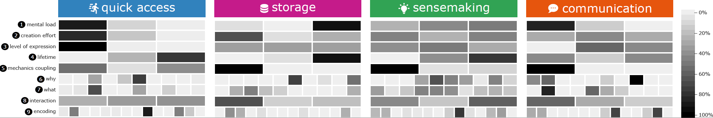

Beyond Entertainment: An Investigation of Externalization Design in Video Games

Venue. CGF (2025)
Abstract. This article investigates when and how video games enable players to create externalizations in a diverse sample of 388 video games. We follow a grounded-theory approach, extracting externalizations from video games to explore design ideas and relate them to practices in visualization. Video games often engage players in problem-solving activities, like solving a murder mystery or optimizing a strategy, requiring players to interpret heterogeneous data—much like tasks in the visualization domain. In many cases, externalizations can help reduce a user’s mental load by making tangible what otherwise only lives in their head, acting as external storage or a visual playground. Over five coding phases, we created a hierarchy of 277 tags to describe the video games in our collection, from which we extracted 169 externalizations. We characterize these externalizations along nine dimensions like mental load, visual encodings, and motivations, resulting in 13 categories divided into four clusters: quick access, storage, sensemaking, and communication. We formulate considerations to guide future work, looking at tasks and challenges, naming potentials for inspiration, and discussing which topics could advance the state of externalization.
Link to this page: